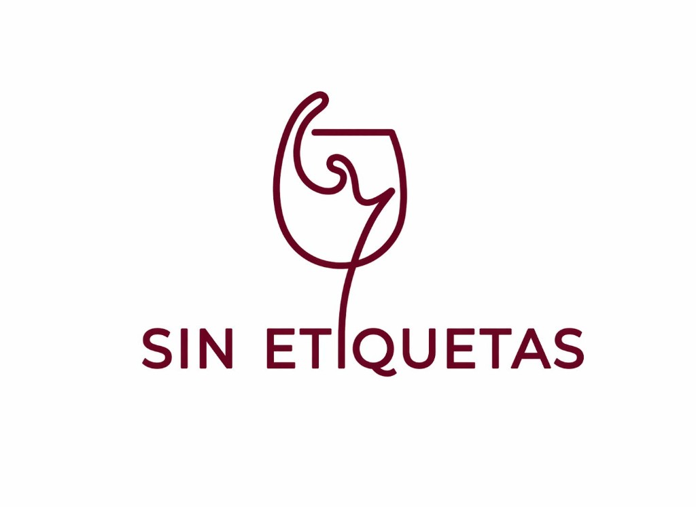

Autenticidad
Nada de poses ni carteles de "Commelier dice". Jugamos, olemos cosas raras, maridamos lo que nadie maridaria, y si funciona...funciona.

CATAS NÓMADES — MENDOZA
Un patio de juegos para el vino y los sentidos. Probás, te reís, aprendés sin darte cuenta. Cada copa, una invitación a curiosear. Palabra con palabra, sin apuro.
QUÉ SOMOS
En Sin Etiquetas el vino se vive con humor sutil y cercanía mendocina.
Contamos historias antes que puntuaciones.
Elegí venir a explorar, no a rendir un examen.
Nada de poses ni carteles de "Commelier dice". Jugamos, olemos cosas raras, maridamos lo que nadie maridaria, y si funciona...funciona.
No te explicamos el vino, lo probamos con vos. La diferencia importa.
¿Que te recuerda este vino? No hay respuesta incorrecta. Esa pregunta es el juego, y el aprendizaje viene de regalo.
Pocas copas, bien elegidas, con algo rico al lado. Sin relleno, sin postureo, con intención.
QUIÉNES SOMOS
Sommeliers, enología, turismo y alguien del mundo tech que asegura que “lo que prometemos se sostiene de punta a punta”.
Sommelier - Especializada en Enologia y gastronomía
Le huyo al decanter y tengo un talento natural para dejar las copas chuecas en la mesa. Pero que no te engañe mi falta de protocolo: mi paso por la gastronomía y mis estudios como sommelier me enseñaron que el respeto por el vino no está en las formas, sino en el disfrute. Soy Haise, tu guía de confianza para hablar de maridajes increíbles, cepas y buenos momentos, sin nada de esnobismo."
Gerente de hospitalidad - Especializada en Sommellierie
Hola! Soy Daiana. Mi mundo es la hospitalidad, el turismo y la restauración, pero en Sin Etiquetas dejo el traje de gerente en la puerta y soy la que acomoda las copas chuecas.
Siempre sentí que el vino se entiende mejor desde las emociones que desde la teoría. Por eso me gusta crear experiencias relajadas, donde cada persona pueda conectar el vino con algo propio.
Acá no hay respuestas correctas: si un vino te recuerda a frutas rojas, espectacular. Y si te recuerda al perfume de tu ex tóxico… también sirve.”
Apasionado del vino · Spec Developer (SDD)
Tengo mucha experiencia en turismo, pasión por el vino y, por alguna razón que todavía estoy procesando, me volví el nerd tecnológica del grupo. Mientras estas dos se elevan hablando de terroir y maridajes del alma, yo soy el que las agarra del tobillo antes de que salgan volando. Entiendo de taninos, pero mas que eso, entiendo de deadlines. Y eso, en un emprendimiento, vale igual.
CÓMO SE VIVE
Podés mezclar, repetir, traer a alguien que “no sabe nada”; Mejor: traelo por eso.
Fechas y lugares: los vamos a anunciar en Instagram.
Arrancamos desde cero, sin drama. Olemos, comparamos, nos equivocamos, nos reímos. Una cata guiada donde la única pregunta tonta es la que no se hace. Tapeo de la zona incluido, porque el vino solo nunca fue la idea.
Sin etiqueta, sin precio, sin pistas. Solo el vino en la copa y lo que te genera. Descubrís varietales de proyectos chicos de Argentina que probablemente nunca viste en una góndola, y entendés por qué eso importa. Cierra con brindis y charla suelta, que es cuando pasan las mejores conversaciones.
¿Quién dijo que el vino fino va con comida fina? Acá probamos el vino con lo que realmente comemos: pan, chocolate, dulce de leche, lo que aparezca. Hablamos de por qué funciona o por qué no, sin manual. Spoiler: casi siempre funciona.
Mendoza produce el 70% del vino del país y la mayoría de esa historia no llega a ninguna copa. Acá sí. Contamos lo que pasa en los viñedos chicos, lo que está cambiando en la industria, lo que se calla en las bodegas grandes, y por qué el terroir de acá es una conversación que recién empieza. Copa en mano, sin PowerPoint.
No tenemos un solo techo. El vino tampoco tiene uno. Cada cata puede ser en un barrio, un patio, un living amigo. Misma intención, distinto escenario. Ideal para que el vino se acerque a todo el país.
Ver novedadesCatálogo curado, kits, club de vinos, experiencia de compra alineada a Sin Etiquetas. Dejanos tu mail: cuando el e-commerce quede listo, te avisamos.
SIGUIENTE PASO
¿Querés venir, traer gente o simplemente preguntar si el vino de la próxima cata va a ser rico? Escribinos. No tardamos en responder y no te vamos a mandar un PDF con términos y condiciones.
WhatsApp — próximamente
E-mail corporativo: consultas@sinetiquetas.club